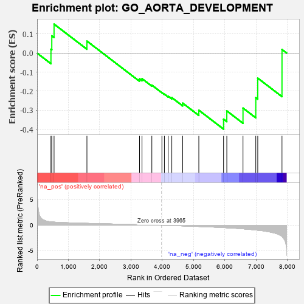
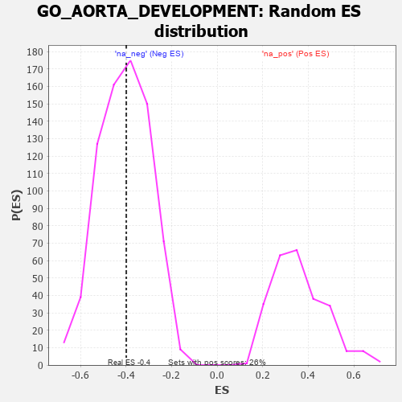

| | | Dataset | 7d |
| Phenotype | NoPhenotypeAvailable |
| Upregulated in class | na_neg |
| GeneSet | GO_AORTA_DEVELOPMENT |
| Enrichment Score (ES) | -0.39901268 |
| Normalized Enrichment Score (NES) | -0.9805208 |
| Nominal p-value | 0.5248322 |
| FDR q-value | 0.89521587 |
| FWER p-Value | 1.0 |
Table: GSEA Results Summary

Fig 1: Enrichment plot: GO_AORTA_DEVELOPMENT
Profile of the Running ES Score & Positions of GeneSet Members on the Rank Ordered List
| PROBE | GENE SYMBOL | GENE_TITLE | RANK IN GENE LIST | RANK METRIC SCORE | RUNNING ES | CORE ENRICHMENT | | 1 | SUFU | | | 443 | 0.665 | 0.0202 | No |
| 2 | LRP1 | | | 470 | 0.648 | 0.0909 | No |
| 3 | SRF | | | 542 | 0.615 | 0.1521 | No |
| 4 | NPRL3 | | | 1592 | 0.375 | 0.0631 | No |
| 5 | SNX17 | | | 3272 | 0.110 | -0.1355 | No |
| 6 | TAB1 | | | 3351 | 0.097 | -0.1342 | No |
| 7 | DCTN5 | | | 3665 | 0.049 | -0.1680 | No |
| 8 | EYA1 | | | 3987 | -0.006 | -0.2077 | No |
| 9 | ROBO2 | | | 4066 | -0.018 | -0.2155 | No |
| 10 | AP2B1 | | | 4185 | -0.039 | -0.2258 | No |
| 11 | TBX2 | | | 4303 | -0.060 | -0.2337 | No |
| 12 | MYLK | | | 4651 | -0.128 | -0.2627 | No |
| 13 | TBX1 | | | 5166 | -0.241 | -0.2998 | No |
| 14 | PRDM1 | | | 5956 | -0.457 | -0.3468 | Yes |
| 15 | JAG1 | | | 6060 | -0.494 | -0.3034 | Yes |
| 16 | ROBO1 | | | 6577 | -0.699 | -0.2885 | Yes |
| 17 | PDE2A | | | 6985 | -0.927 | -0.2339 | Yes |
| 18 | MYH10 | | | 7048 | -0.966 | -0.1315 | Yes |
| 19 | PKD2 | | | 7822 | -2.167 | 0.0187 | Yes |
Table: GSEA details [plain text format]

Fig 2: GO_AORTA_DEVELOPMENT: Random ES distribution
Gene set null distribution of ES for GO_AORTA_DEVELOPMENT